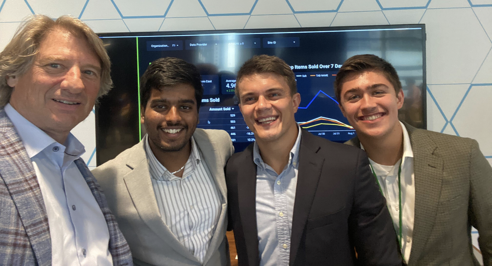
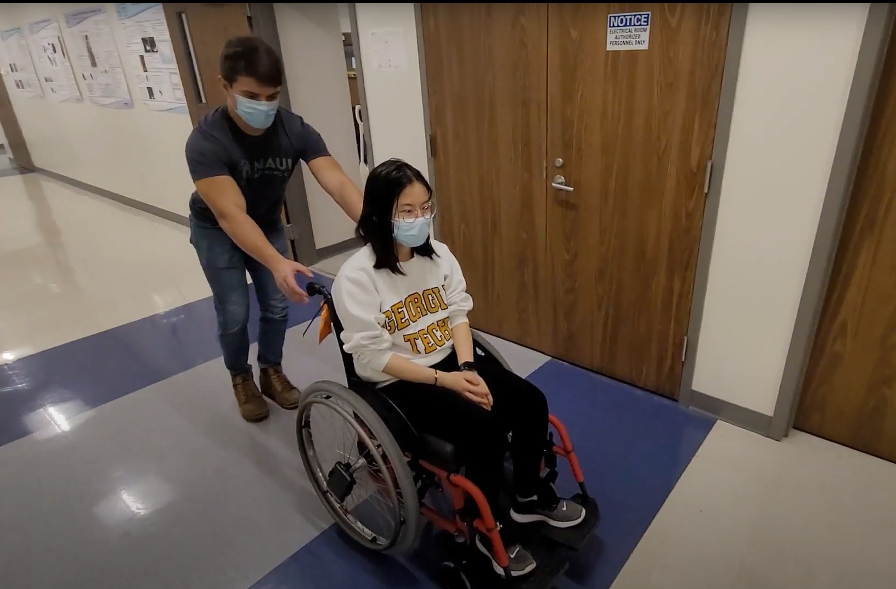

Some of My Projects
Project One:
tdm-insights

During an internship with NCR, my team and I built an dashboard for the Business
Services Layer which visualizes different KPIs from information received from
transaction logs that are generated whenever a transaction occurs on NCR's Points Of Sale.
Since this projects had three shipments to production, real world data was able to be gathered from organizations
like Wendy's, KFC, and Circle K to name a few. With this data, the application is able to display key metrics
such as total number of transactions, total dollar amount of those transactions, top items sold, and many others.
This data can also be filtered in order to be viewed for a specific organization or a specific point of sale.
Tools used to build this application were Google Cloud Platform's Pub/Sub, Cloud Functions, BigQuery, and Google's Data Studio.
Pictured above is my team (Pranay Rapolu and Max Ratmeyer) and I with NCR's CEO Mike Hayford after a presentation of our application.
Project Two
Rolling Resistance

The effects of different types of wheelchair tire material were being researched at Georgia Tech in the
wheelchair lab. Mainly, the effects on rolling resistance. Rolling resistance is the amount of resistance that
a wheel's material provides in order for there to be enough friction to force the wheelchair to stop. Our team of students (one grad three undergrads),
was the first team to start this research, and we begun by creating an app for Android phones using Java which tracks the acceleration of the wheelchair.
Project Three
Escape the Labyrinth

A dungeon crawler style video game created using JavaFX. This project allows a player to select from different difficulties
and gives the player the option of using a sword, knife, or a staff as a weapon. The player can collect new weapons, potions, and
special items while navigating through the labyrinth and fighting the enemies that wait within. Data structures (arrays and linked lists) are
used to randomize the paths that a player can take before they reach the final boss and escape the labyrinth.
Project Four
Georgia Tech Buzzfunds

Written using Java, this program identifies a Georgia Tech student based off of their name, GPA, and year. The program
then goes on to determine whether the student has sufficient funds to purchase a meal from the dining hall.
Project Five
Dynamic Memory with C!

Dynamic memory allocation is an important component when writing in C. This project consists of functions which
implement a singly-linked list data structure. The linked list has the ability to add, remove, and re-order the data
that is stored inside of it.